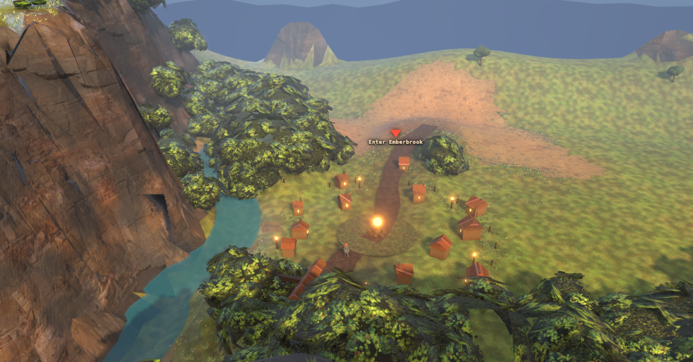

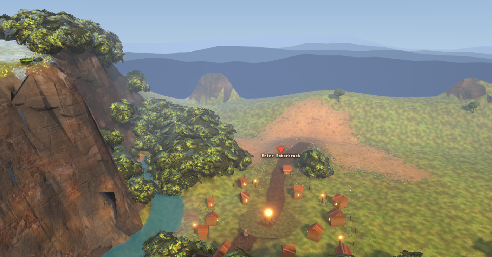
2026-08-04 · ow-valley, real-time follow camera · boom distance 40 unchanged (user ruling) ·
lighting as of this capture: the shipped golden-hour rig, owlight default, no lighting-lane changes included —
if the lighting lane has landed since, re-shoot before comparing.
The follow camera is a 42° vertical fov, so the top edge of the frame sits 21° above the camera's own axis.
While the camera looks down at the shipped 0.61 rad (35°), the top of the frame is 14° below the horizontal.
Nothing above the horizon can be on screen at any aim while the down-angle is ≥ 21°. That is why all four
ow-* cameras measured zero sky pixels, and why the sky dome, the three ridge rings and the horizon fog
built on 2026-08-02 had never appeared in a shipped frame: they were never failing, they were off-screen.
It also caps how far the frame can see: at 22.9 m of eye height, a top edge 14° down hits the ground at 92 m. Fog runs 34–205 m, so more than half the aerial-perspective range was outside the picture.
The obvious move is to drop the pitch. It was swept at 0.61 / 0.45 / 0.36 / 0.30 / 0.24 / 0.18 on all four cameras. This rig has no camera collision. Reducing the pitch swings the boom down and back into whatever is behind the player, and in a corridor that runs along a gorge wall and under a canopy that is nearly everything:
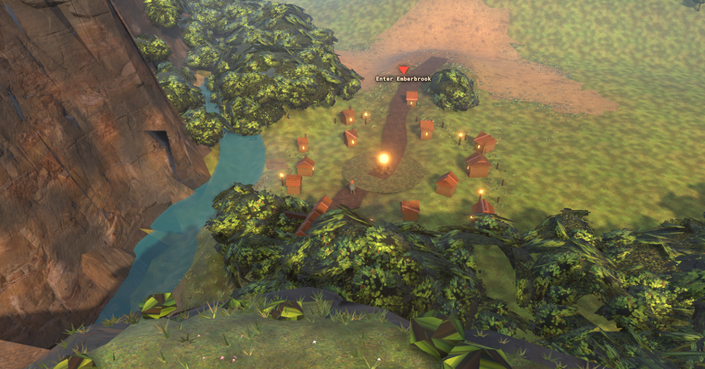
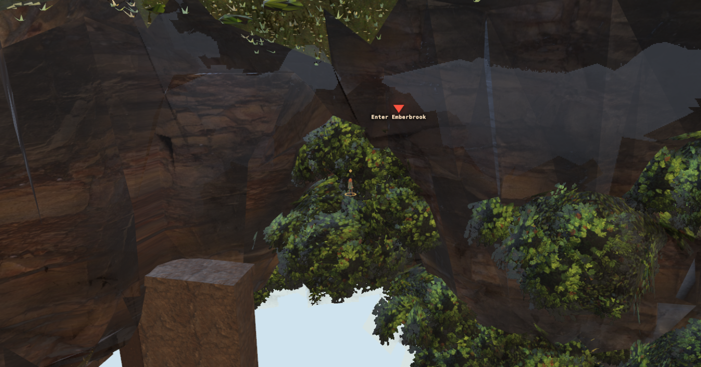
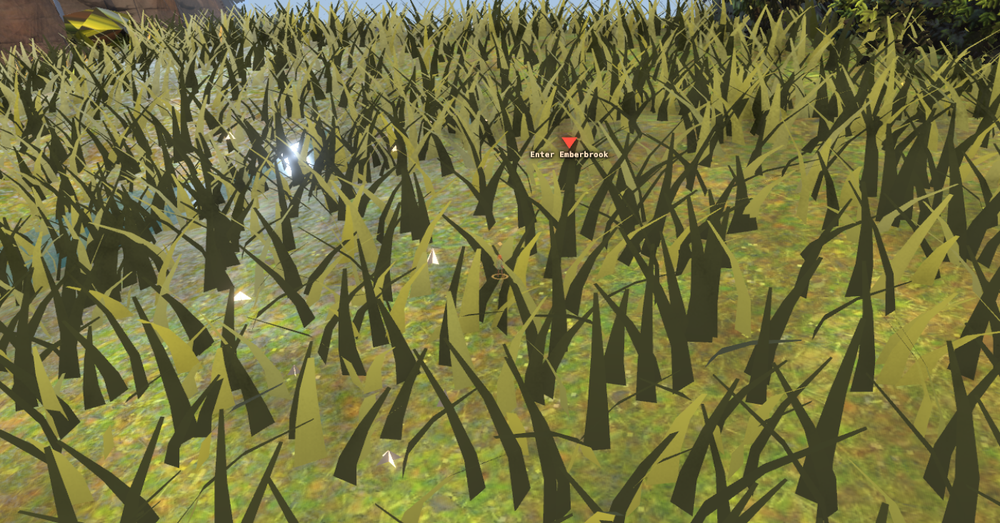
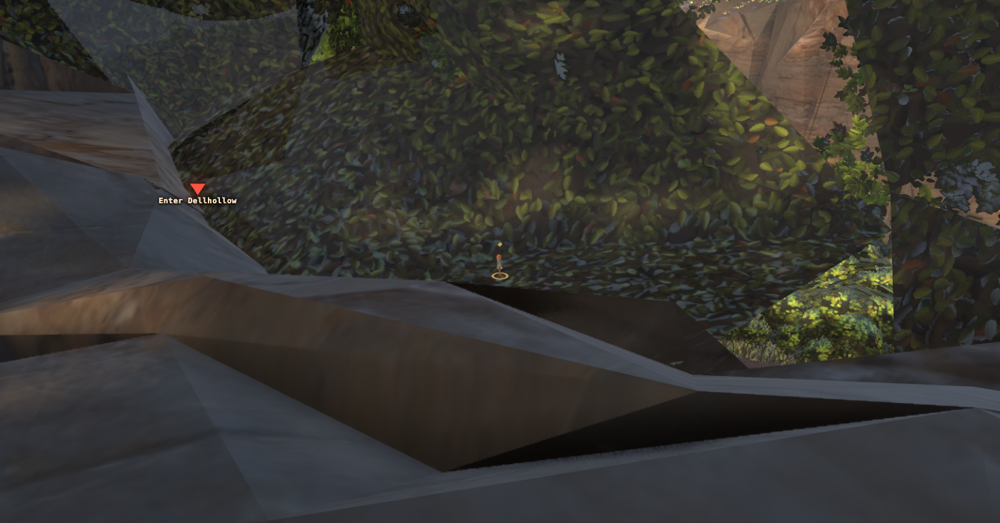
An earlier lane already measured that at boom 40 the shipped camera is inside the canopy for road stations 78–172. Every degree taken off the pitch makes that worse. Pitch stays at 0.61.
The references are not low cameras — they are high cameras that still see a distance plane. So the boom's
elevation and the camera's aim are now two numbers. ORBIT.tilt rotates the camera up about its own X
after the look-at; the camera does not move at all, so no new occluder can enter and there is nothing to
re-verify about the walk. The horizon comes down into frame and the player comes down with it.
| candidate | pitch | tilt | eye height | ground reach at frame top | player, % down frame | |
|---|---|---|---|---|---|---|
| A | 0.61 | 0.00 | 22.9 m | 92 m | 50% | shipped, baseline |
| B | 0.61 | 0.14 | 22.9 m | ~215 m | 66% | a distance plane, barely any sky |
| C | 0.61 | 0.22 | 22.9 m | horizon in frame | 79% | RECOMMENDED |
| D | 0.61 | 0.30 | 22.9 m | horizon + sky band | 90% | best landscape, player nearly cropped |
Viewpoints are tools/ow_probe/land_cams.json: gate (Emberbrook portal, boom 16), meadow (road verge, boom 12),
vista (the same spot at the shipped boom 40), gorge (the Dellhollow approach, boom 40).


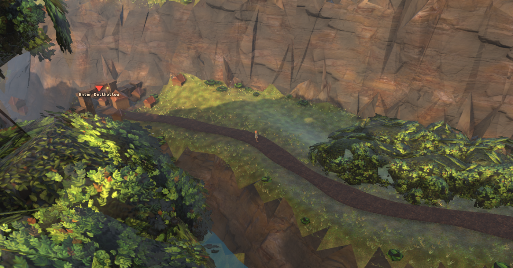
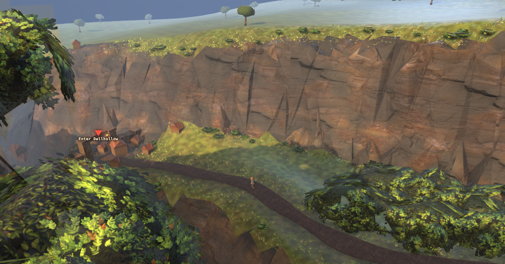
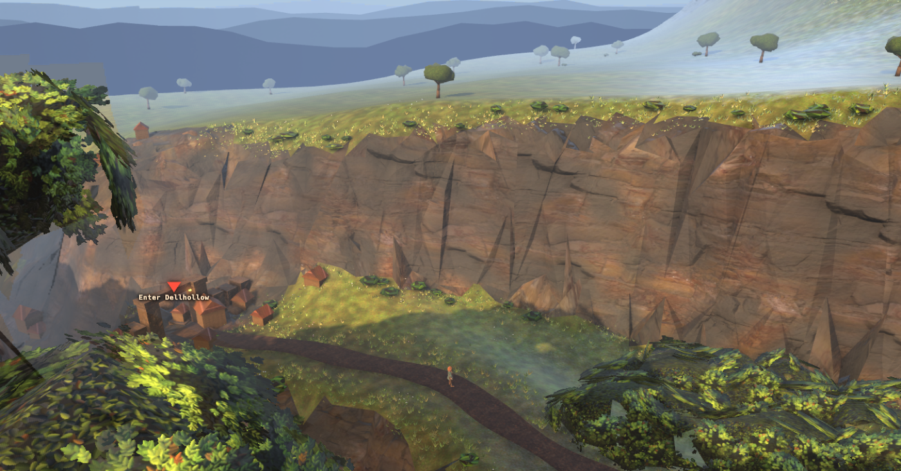
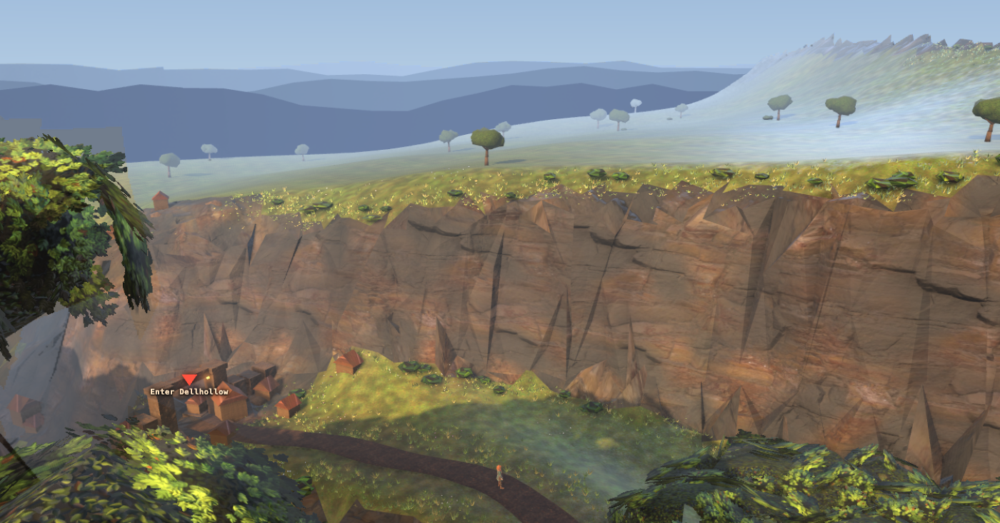
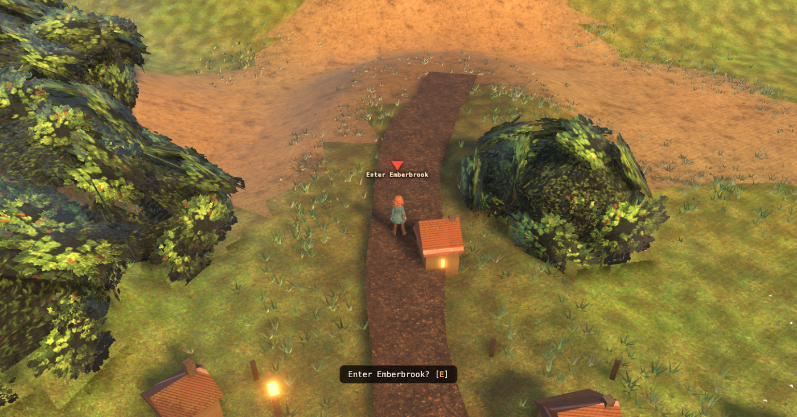

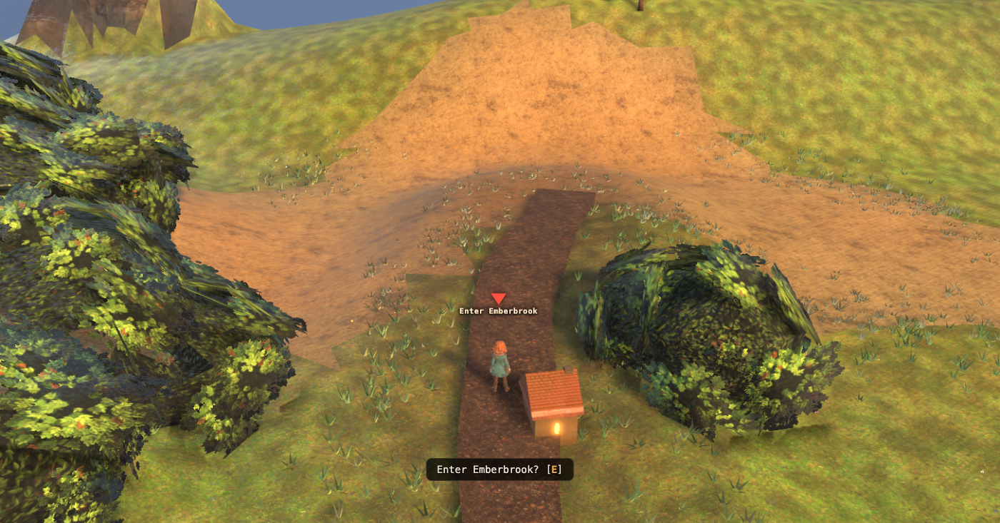
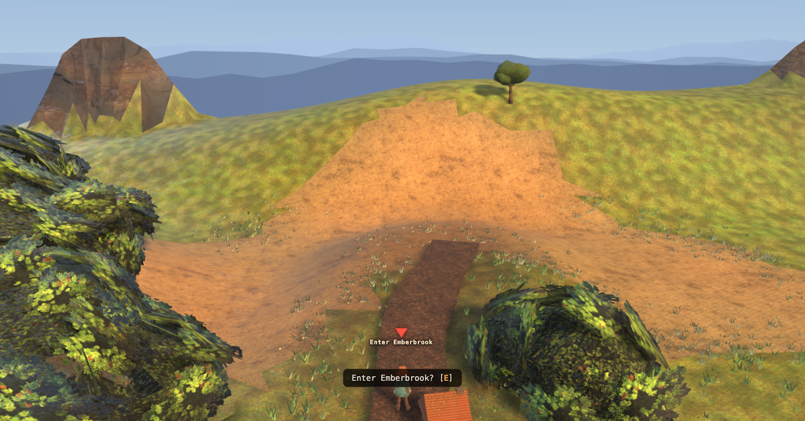
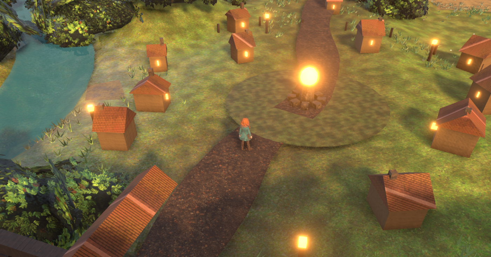
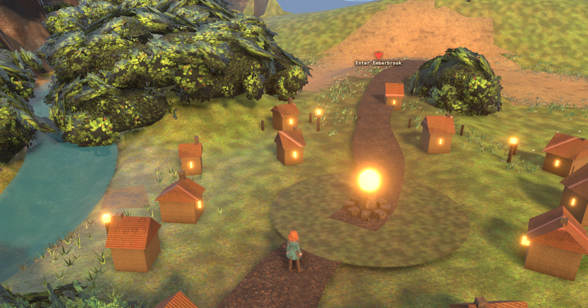
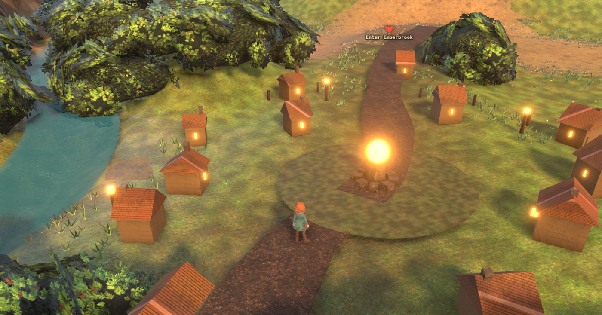
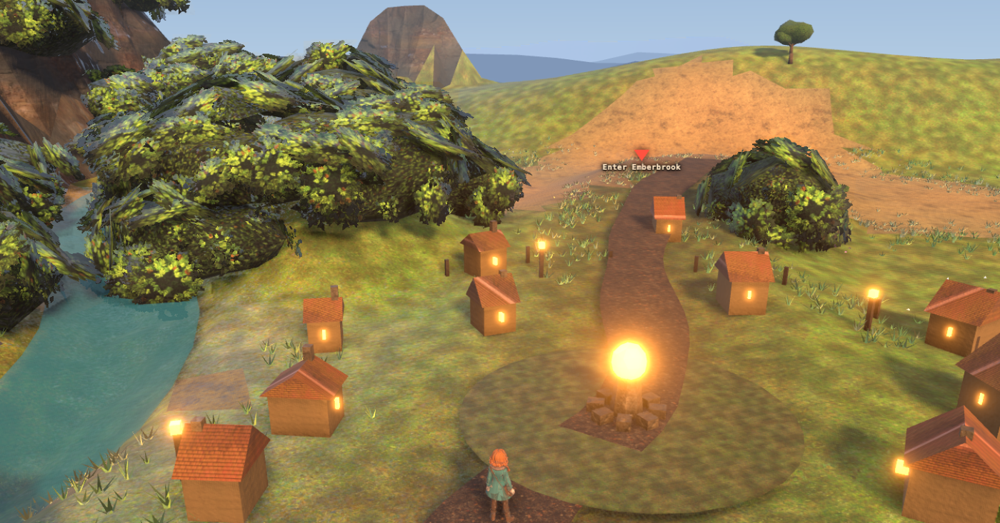
| exposed | status | what it was |
|---|---|---|
| Three ridge rings rendering as one flat near-white value | FIXED | They sat at 210/270/320 m with fog:true and fog.far = 205: every ring was clamped to
exactly the fog colour, so the authored 0x6e7f96→0xb4c5d2 recession — the entire reason for having three
rings — was computed and thrown away. They are painted constants like the dome; they now take
fog:false. Four rings now, and the layering is the single biggest gain in these frames. |
| Ridges reading as paper tents | FIXED | 13/11/9 segments around a full circle is one triangle every 27° — a 98 m wide isoceles tent at r=210. Rebuilt as a continuous crest strip: 120 spans of a smoothed periodic noise line, so the silhouette has shoulders and saddles. |
| The horizon looked different at the two ends of one road | FIXED | Dome and rings were built at the origin and stayed there, while the walked corridor is 172 m long: at the Dellhollow end the "distant" 205 m ring could be 70 m away. They now ride the player in XZ (never in Y). |
| First rebuild of the rings covered the sky | FIXED | Recorded because it is the trap: crests of 40–88 m are plausible mountains, and every one of them stood above the eye — so the nearest and darkest ring covered the sky and the three paler rings behind it. The eye rides at y~37 (gorge) to y~50 (bench); crests near 30 m sit under it, which is what makes them recede. |
| A pale grey rectangle, upper left of gorge | NOT FIXED — identified only as "not the skirt" | It moves down the frame as the tilt increases, so it is world geometry, not an overlay. The obvious
suspect was the edge_skirt, hidden since 2026-08-02 on the argument that "fog now does its job" — a
decision taken when the tile edge was 14° off screen. Tested: showing the skirt again changes nothing
in that frame, so it is some other object and the 2026-08-02 decision stands. Needs a picker to name it. |
| Far terrain going milky, and the tile edge visible as a hard silhouette with grass cards on it | NOT FIXED — ran out of night | Most visible top-right of gorge. Fog 34/205 was tuned against a frame that ended at 92 m; the far half of its range has never been looked at. This is the next thing to sweep and it belongs with the fog, not the camera. |
That is the user's actual requirement and it is the test C has to pass rather than the prettiest horizon. It gets better, not worse: tilting up trades ground behind the player for ground ahead. At A the frame stops 92 m out; at C the whole of the Emberbrook bench, the road up to the gate, the gorge and the river are all in one frame. Field of view is untouched — same 42°, same boom 40, character the same size on screen as before (pitch and fov are what set that, and neither moved).
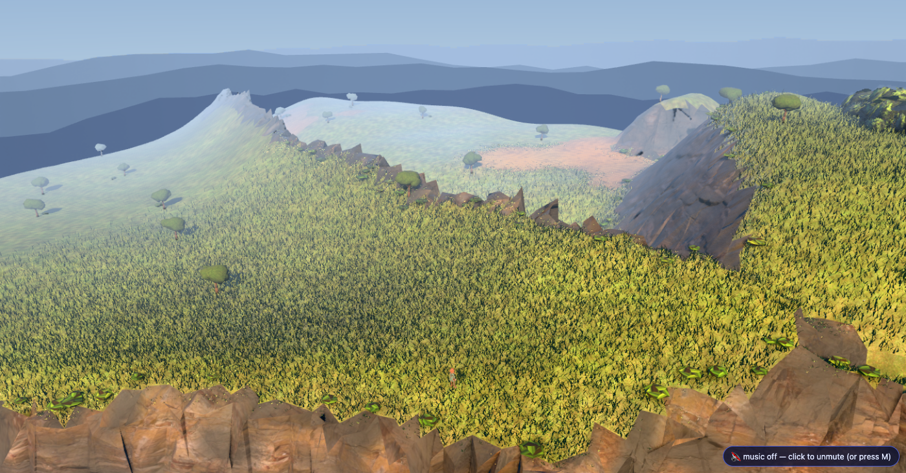
Four ridge bands, sky, and the road's own landform layered in front of them: this is the gain, and it is on the
stretch the player actually walks rather than on a chosen viewpoint. It also shows the bill. The middle
distance is milky. Fog is Fog(0xd3e0e8, 34, 205) and it was tuned against a frame that ended at 92 m,
so everything past about 120 m — which nobody could see until tonight — is washing to near-white. The horizon is
worth having; the fog curve underneath it now needs a sweep it has never had. That is a lighting/post job, not a
camera one, and it is the single biggest thing still owed on this frame.
/play3d.html?scene=ow-valley&rt=1&owtilt=0.22 — and &owtilt=0 is exactly the frame that shipped
before this change. &owpitch= overrides the boom elevation for anyone who wants to re-run the sweep.
Plates: node tools/_gate_shots.mjs --shots <spec> --port 3000 over
tools/ow_probe/land_cams.json.